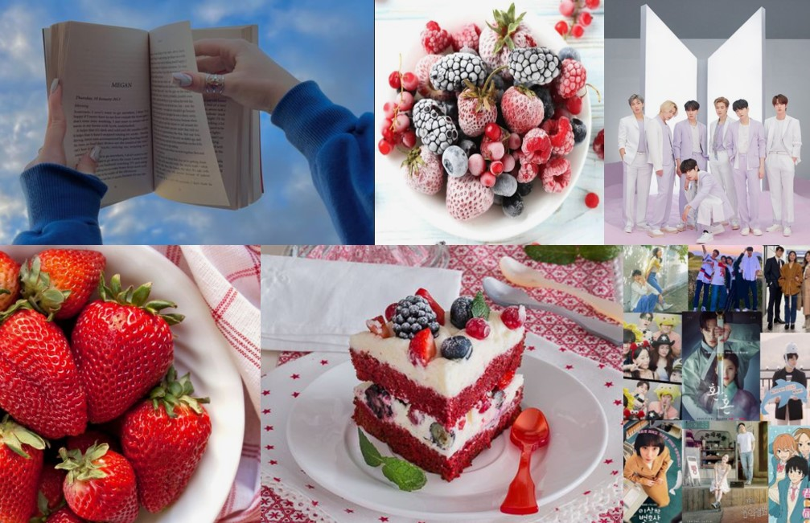
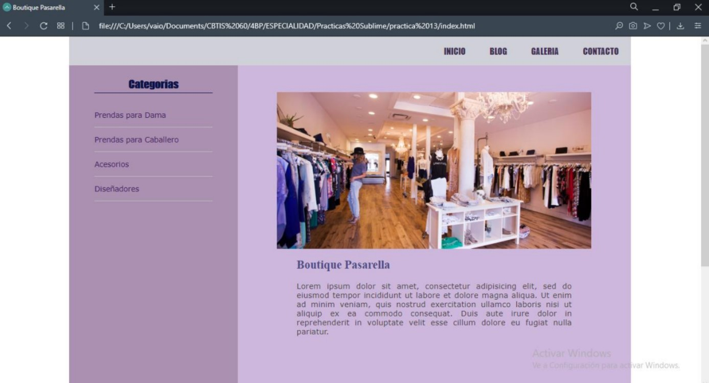
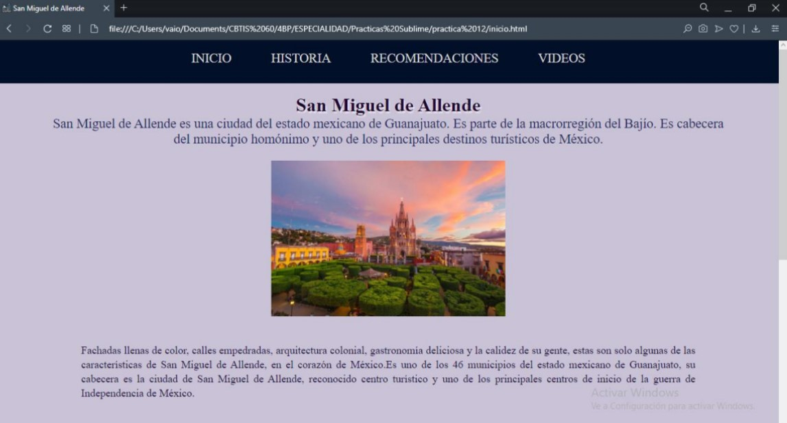
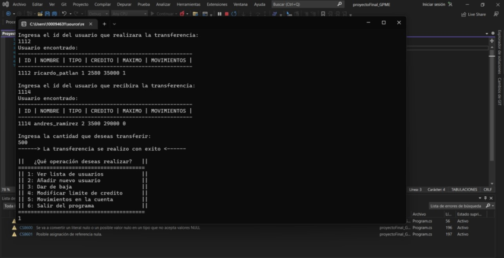
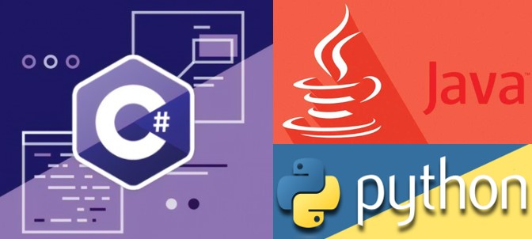

Mi portafolio
Maria Edith Galván Pérez.
Bienvenido a mi portafolio, en donde podras encontrar un poco de información sobre mi.
Espero te guste el contenido de mi portafolio.

Maria Edith Galván Pérez.
Bienvenido a mi portafolio, en donde podras encontrar un poco de información sobre mi.
Espero te guste el contenido de mi portafolio.
Soy estudiante en la UAQ, facultad de Informática, actualmente curso el tercer semestre de la carrera de Ingeniería de Software. Soy de San Miguel de Allende, Gto, sin embargo, vivo en un rancho llamado Los Galvanes. Me considero una chica extrovertida. Me encanta conocer personas y hacer nuevos amigos.
Algunos de mis pasatiempos y gustos:

La mayoria de proyectos que he realizado, van enfocados a proyectos finales en en la universidad e incluso en bachillerato, donde fue que desarrolle de mejor manera mis habilidades en HTML, por lo que hice muchas paginas web de fiversos temas.
Algunos de ellos, son los siguientes:
Pagina web de una boutique, donde encontraras ropa de dama, caballero y niños. Utilice HTML y CSS.

Programa referente a una clinica de salud, donde podemos tener bases de datos sobre, pacientes, médicos, medicamentos, etc. Para esteproyecto utilice Java.

Programa relacionado a un sistema de un banco, donde un usuario puede hacer diversos movimientos, como lo pueden ser transferencias. Para este proyecto utilice C#.

Programa referente a una clinica de salud, donde podemos tener bases de datos sobre, pacientes, médicos, medicamentos, etc. Para esteproyecto utilice Java.
En el entorno laboral actual, tanto las habilidades blandas como las duras desempeñan un papel crucial en el éxito profesional, por lo que relatre un poco sobre las que poseo.
Habilidades Duras:
Tengo conocimiento sobre varios lenguajes, como lo son: C#, Java, y en estos momentos me encuentro aprendiendo sobre Python, tengo mayor conocimiento en HTML, CSS y un poco de JavaScript, aunque claro que puedo mejorar en los lenguajes ya mencionados.

Habilidades Blandas:
Respecto a estas habilidades, puedo decir que cuento con la capacidad de comunicación, la buena gestión de tiempo, liderazgo, inteligencia emocional y dedicación a mis proyectos y trabajos.